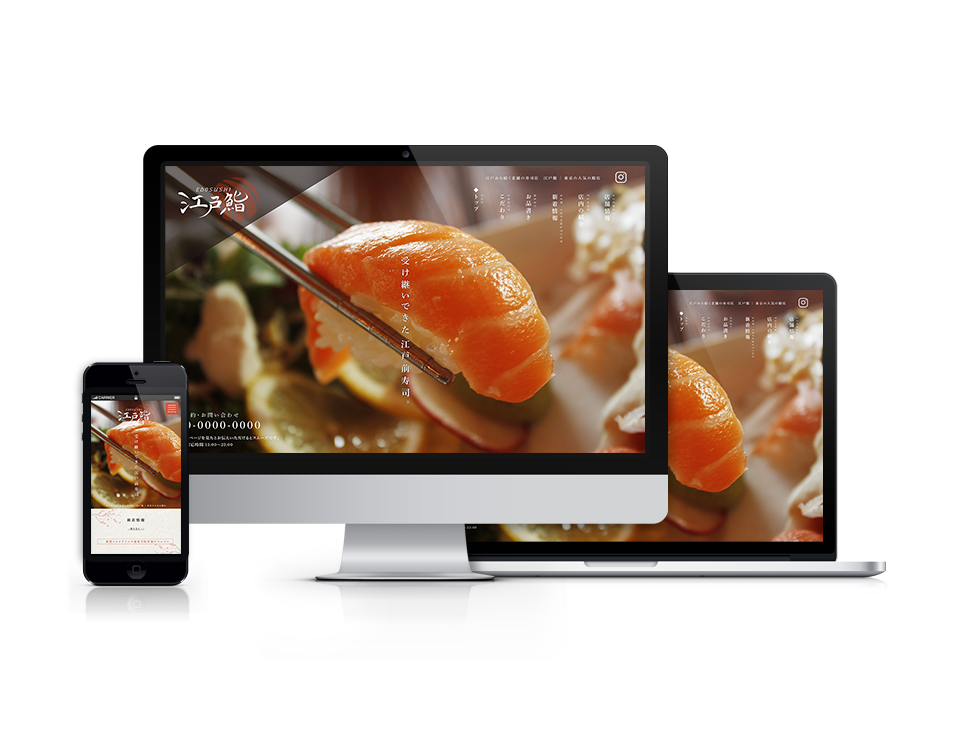
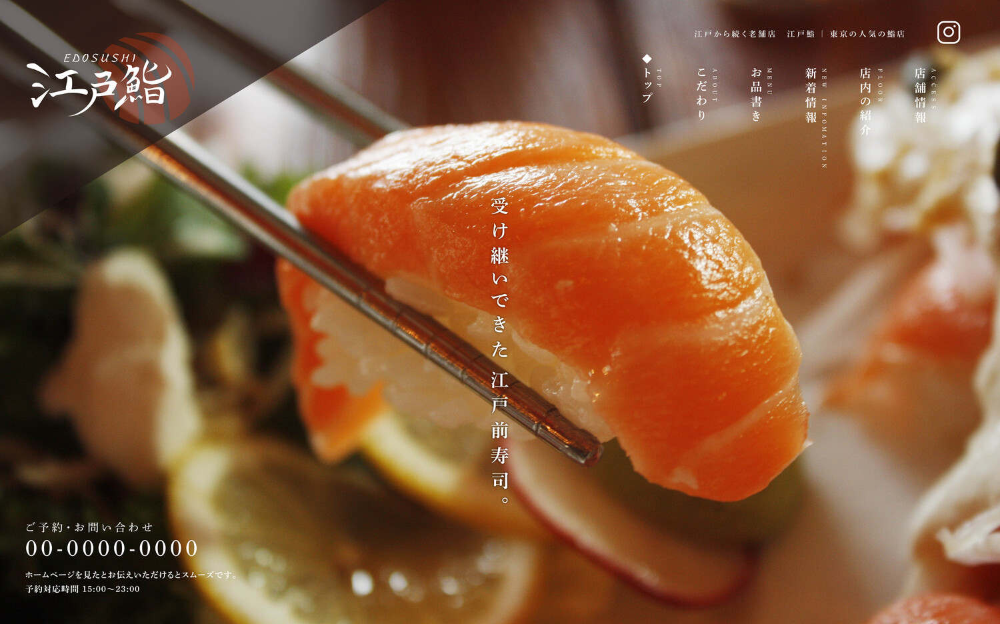
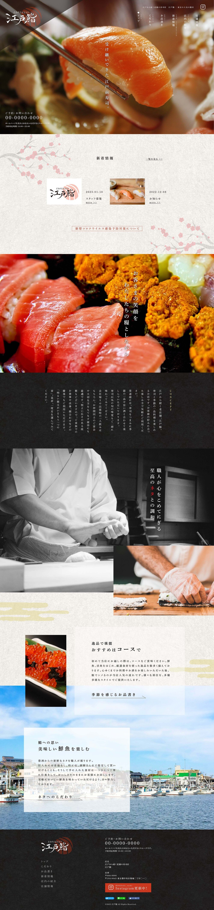
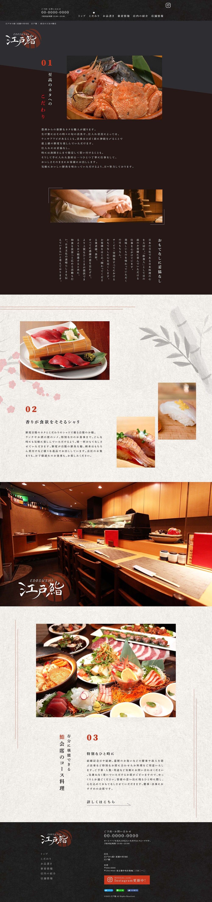
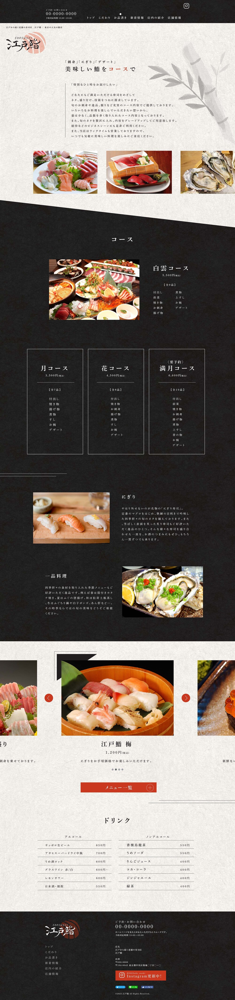
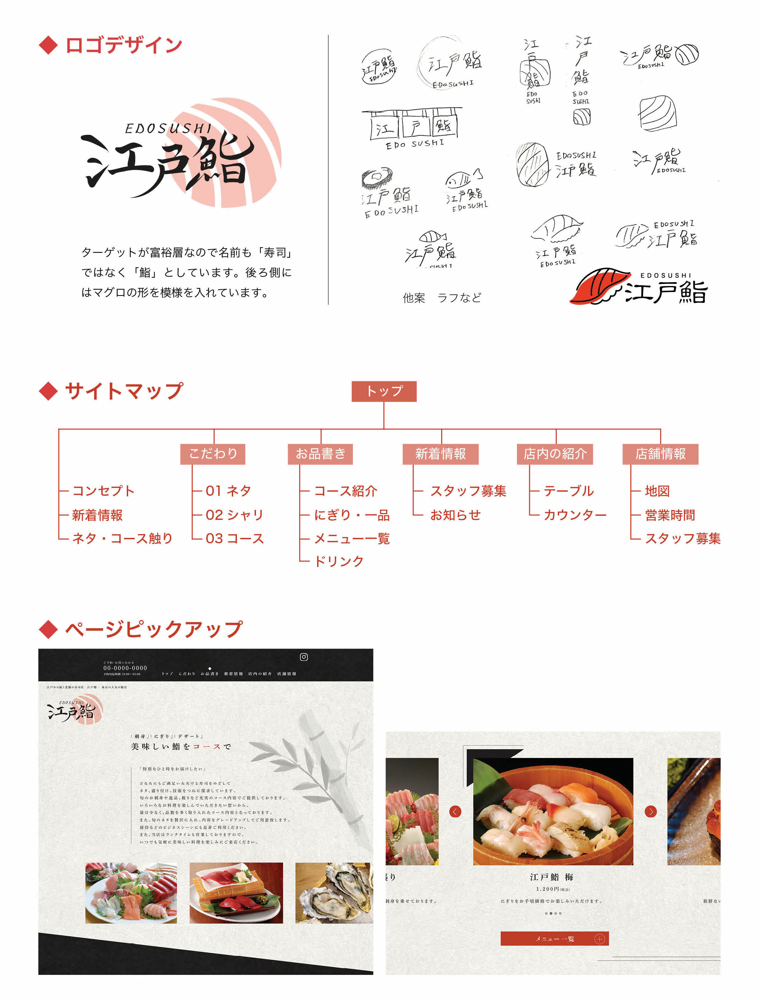

WORKS

Web
∨

Graphic

Illust / art
架空のすし屋 WEBサイトデザイン
江戸鮨


※デザインのみ
- 制作時期
- 2023年 / 3 日間（デザインのみ）
- 使用ツール
- Photoshop、Illustrator
- ターゲット
- 富裕層の家族へ向けて
- 動機
- 自主制作
概要
江戸から続くすし屋として、ロゴから制作。高級の焼肉・すし屋のホームページを参考にしました。高級感を意識して、色は主に黒・赤のシンプルな色を使用して構成しています。トップページには、写真をあえて白黒にして一部赤文字を入れるなど工夫をしました。キャッチコピーなどの文字間の調整、ページのヘッダーまで細かいところにもこだわりました。
トップページ
こだわりページ
お品書きページ
ロゴ・サイトマップなど

和風感を出すため、背景にはテクスチャーを入れイラストも手書き感のあるものにしました。読みやすさを考え、文字のジャンプ率も高めにつけました。ターゲットが富裕層なので名前も「寿司」ではなく「鮨」としました。後ろ側にはマグロの形を模様を入れています。お品書きページのメニューでは、ボタンで左右に写真がスライドされて見れ、jQuery を使用した動きのあるWEB サイトを意識してデザインしました。